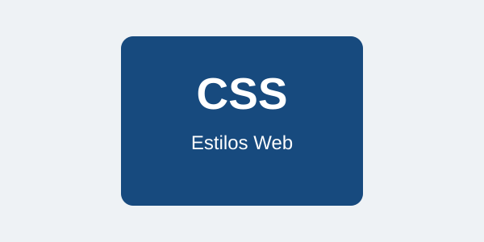

Sobre el proyecto
En este laboratorio se utilizan elementos HTML5 junto con diferentes propiedades de CSS.
Elementos utilizados
- HTML5 para la estructura.
- CSS para el diseño.
- Selectores de elementos, clases e IDs.
- Modelo de caja.
- Diseño responsivo.
Laboratorio 4.1 - Creación de una página web con CSS
Esta página fue creada para practicar el uso de CSS y diferentes tipos de selectores.
CSS permite cambiar los colores, tamaños, espacios y la apariencia general de una página web.
En este laboratorio se utilizan elementos HTML5 junto con diferentes propiedades de CSS.

Esta caja utiliza margen, borde, relleno y contenido. Estas propiedades forman parte del modelo de caja de CSS.
Esta sección utiliza clases para aplicar estilos de manera específica.